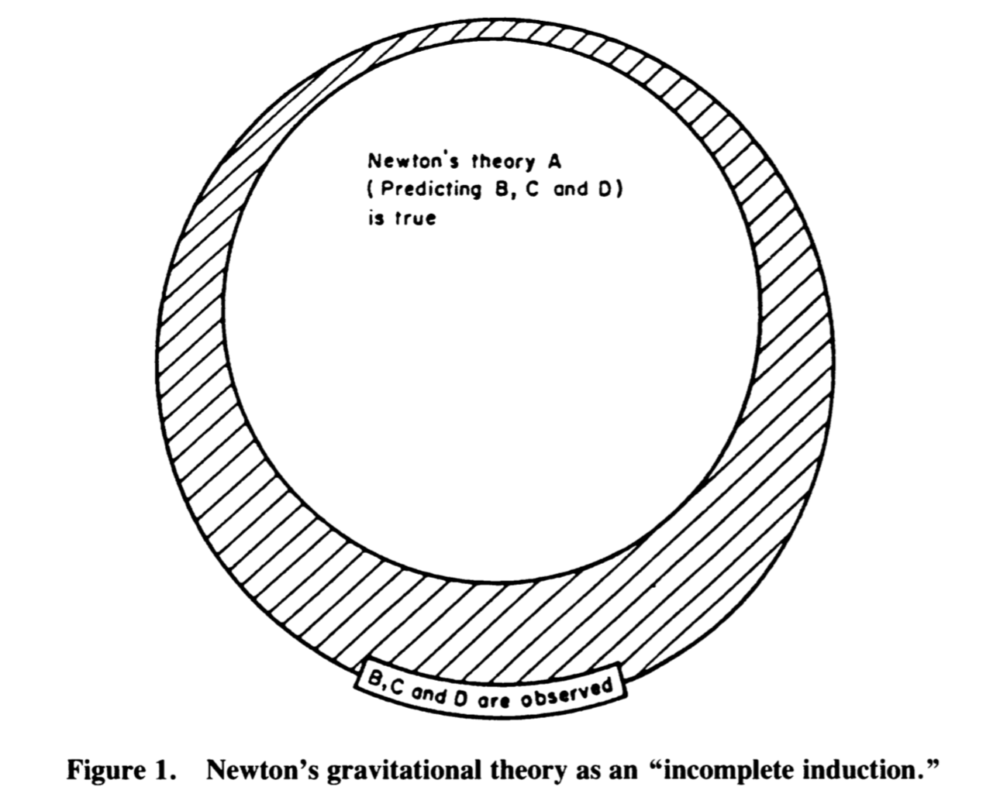

What’s the problem with theories?
A scientific theory can be defined as a set of logical propositions that posits causal relationships between observable phenomena. These logical propositions are originally abstract and broad (e.g., “every object responds to the force of gravity in the same way”) but lead to concrete and specific predictions that are empirically testable (e.g., “the falling speed of two objects should be the same, all other things being equal”).
The concept of a scientific theory is not a unitary concept though. As an example, Meehl (1986) lists three kinds of theories:
- functional-dynamic theories which relate “states to states or events to events”. For instance, we say that when one variable changes, certain other variables change in such and such ways.
- structural-compositional theories: the main idea is to explain what something is composed of, or what kind of parts it has and how they are put together.
- evolutionary theories that are about the history and/or development of things (e.g., Darwin’s theory, Wegener’s theory of continental drift, the fall of Rome, etc.).
Despite this diversity of nature, and without any clear-cut consensus on what makes a good theory, philosophy of science provides some useful conceptual tools to “appraise” theories, to identify what makes them “strong” or “weak”, and to assess what makes a “strong test” or a “weak test” of a theory. Incidentally, describing these tools is the main goal of the current post, so let’s start.1
We can not confirm them
The first “problem” with theories is that we can not confirm them. According to Campbell (1990), the logical argument of science has the following form:
- If Newton’s theory is true, then it should be observed that the tides have period B, the path of Mars shape C, the trajectory of a cannonball form D, etc.
- Observation confirms B, C, and D.
- Therefore Newton’s theory A is “true”.
However, this argument is a fallacious argument known as the affirmation of the consequent. One way to realise it is to visualise it as a diagram (figure from Campbell, 1990):

The invalidity of this argument comes from the existence of the cross-hatched area, which contains other possible explanations (than Newton’s theory) for the observed data. However, the syllogism is not useless: we could have observed data that are inconsistent with B, C, and D, in turn impugning the “truth” of Newton’s theory. Also, if observations are confirmed, the theory remains one of the possible explanations for their existence (see our later discussion of the concept of corroboration). As put by Campbell (1990), there is “an important asymmetry between logically valid rejection and logically inconclusive confirmation”.
This, together with the Duhem–Quine problem (that we will discuss in length later on), makes any experimental corroboration (or falsification, as we will see) of theoretical predictions explicable by challenging the background assumptions, or the adequacy of the experimental apparatus, or asserting the presence of one of Meehl’s “crud factors”, etc. (Campbell, 1990).
We can not (strictly) falsify them
We can not confirm theories, but maybe we can at least think of a way of disproving them? But what does it mean for a theory to be false? According to Popper’s view, a theory is falsifiable “if and only if there exists at least one potential falsifier—at least one possible basic statement that conflicts with it logically”. In other words, a theory can be considered as falsifiable if it can be shown to be false. Note that the falsifiability of early Popper concerns the problem of demarcation (i.e., what is science and what is pseudoscience), and defines pseudosciences as composed of non falsifiable theories (i.e., theories that does not allow the possibility of being disproved).
But when it comes to describe how science works (descriptive purposes) or to know how scientific enquiries should be lead (prescriptive purposes), science is usually not described by the falsification standard, as Popper himself recognized and argued. In fact, deductive falsification is impossible in nearly every scientific context (McElreath, 2016).
In the next sections, we discuss some of the reasons that prevent any theory to be strictly falsified (in a logical sense), namely: i) the distinction between theoretical and statistical models ii) the problem of measurement iii) the problem of continuous hypotheses, and iv) the Duhem-Quine problem.
Statistical models
A statistical model is a device that connect theories to data. It can be defined as an instantiation of a theory as a set of probabilistic statements (Rouder, Morey, & Wagenmakers, 2016).
Theoretical models and statistical models are usually not equivalent as many different theoretical models can correspond to the same probabilistic description, and reversely, different probabilistic descriptions can be derived from the same theoretical model. In other words, there is no one-to-one mapping between the two worlds, which render the induction from the statistical model to the theoretical model quite tricky.
As a consequence, observing consistent observations with some theory \(T\) does not “prove” in any way \(T\) (see previous section), as there could be many other theories that can predict these observations. Likewise, given that rejecting the straw-man null hypothesis can corroborate multiple different theories (as we could find many theories that predict something different from zero, to some extent), it acts as a very “weak corroborator” of any single theory.
Measurement matters
The logic of falsification is pretty simple and rests on the power of the modus tollens2. This argument (whose exposition, for some reason, usually involves swans) can be presented as follows:
- If my theory \(T\) is right then I should observe these data \(D\).
- I observe data that are not those I predicted \(\lnot D\).
- Therefore, my theory is wrong \(\lnot T\).
This argument is perfectly valid and works well for logical statements (statements that are either true or false). However, the first problem that arises when we try to apply this reasoning to the “real world” is the problem of observation error: observations are prone to error, especially at the boundaries of knowledge (McElreath, 2016).
Let’s take an example from physics, related to the detection of faster than-light neutrinos (this example is discussed in the first chapter of McElreath, 2016). According to Einstein, neutrinos can not travel faster than the speed of light. Thus, any observation of faster-than-light neutrinos would act as a strong falsifier of Einstein’s special relativity.
In 2011 however, a large team of respected physicists announced the detection of faster-than-light neutrinos… What was the reaction of the scientific community? The dominant reaction was not to claim Einstein’s theory to be falsified but was instead: “How did this team mess up the measurement?” (McElreath, 2016). The team that made the measurement itself called for independent replications of their observations, out of surprise. Two years later, the community was unanimous that this result was measurement error and the original team indeed realised that the technical error involved a poorly attached cable that messed up the measurement.
This problem has been echoed recently in psychology, where it can be argued that the problem of measurement is significantly harder than in the natural sciences:
“In psychology, measurement is especially difficult because what we want to measure often does not permit direct observation. We can directly observe the height of a person next to us on the bus, but we often have little insight into latent, psychological attributes such as intelligence, extraversion, or depression” (Fried & Flake, 2018).
Overall, the key dilemma (with measurement) is to know whether the falsification is genuine or spurious. Given that measurement is difficult, any scientific conclusion that relies on some form of measurement is probabilistic, rather than either “valid” or “invalid”, “true” or “false”.
Probabilistic hypotheses
Another problem arises from a misapplication of deductive syllogistic reasoning (a misapplication of the modus tollens). The problem (the “permanent illusion”, as put by Gigerenzer, 1993) is that most scientific hypotheses are not really of the kind “all swans are white” but rather of the form:
- “Ninety percent of swans are white”.
- “If my hypothesis is correct, we should probably not observe a black swan”.
Given this hypothesis, what can we conclude if we observe a black swan? Not much. To understand why, let’s translate it first to a more common statement in psychological research (from Cohen, 1994):
- If the null hypothesis is true, then these data are highly unlikely.
- These data have occurred.
- Therefore, the null hypothesis is highly unlikely.
But because of the probabilistic premise (i.e., the “highly unlikely”) this conclusion is invalid. Why? Consider the following argument (still from Cohen, 1994, borrowed from Pollard & Richardson, 1987):
- If a person is an American, he is probably not a member of Congress.
- This person is a member of Congress.
- Therefore, he is probably not an American.
This conclusion is not sensible (the argument is invalid), because it fails to consider the alternative to the premise, which is that if this person were not an American, the probability of being a member of Congress would be 0.
This is formally exactly the same as:
- If the null hypothesis is true, then these data are highly unlikely.
- These data have occurred.
- Therefore, the null hypothesis is highly unlikely.
Which is as much invalid as the previous argument, because i) the premise (the hypothesis) is probabilistic/continuous rather than discrete/logical and ii) because it fails to consider the probability of the alternative.
Thus, even without measurement/observation error, this problem would prevent us from applying the modus tollens to our hypothesis, thus preventing any possibility of strict falsification.
Experimental test of a theory
Again another problem is known as the Duhem–Quine thesis/problem (aka the underdetermination problem). In practice, when an substantive theory \(T\) happens to be tested, some hidden assumptions are also put under examination. These involve auxiliary theories that help to connect the substantive theory with the “real world”, in order to make testable predictions (e.g., “both white and black swans go walk around a similar proportion of time, so that we are equally likely to observe them in the nature”). It also usually involves some auxiliary theories about the instruments we use (e.g., “the BDI is a valid instrument for measuring depressive symptoms”), and the empirical realisation of specific conditions describing the experimental particulars (Meehl, 1978; 1990; 1997).
When we test a theory predicting that “if \(O_{1}\)” (some manipulation or predictor variable), “then \(O_{2}\)” (some observation, dependent variable), what we actually mean is that we should observe this relation, if and only if all of the above (i.e., the auxiliary theories, the instrument theories, the particulars, etc.) are true.
Thus, the logical structure of an empirical test of a theory \(T\) can be described as the following conceptual formula (Meehl, 1978; 1990; 1997):
\[(T \land A_{t} \land C_{p} \land A_{i} \land C_{n}) \to (O_{1} \supset O_{2})\]
where the “\(\land\)” are conjunctions (“and”), the arrow “\(\to\)” denotes deduction (“follows that …”), and the horseshoe “\(\supset\)” is the material conditional (“If \(O_{1}\), Then \(O_{2}\)”). \(A_{t}\) is a conjunction of auxiliary theories, \(Cp\) is a ceteribus paribus clause (i.e., we assume there is no other factor exerting an appreciable influence that could obfuscate the main effect of interest), \(A_{i}\) is an auxiliary theory regarding instruments, and \(C_{n}\) is a statement about experimentally realised conditions (i.e., we assume that there is no systematic error/noise in the experimental settings).
In other words, we imply that a conjunction of all the elements on the left-side (including our substantive theory \(T\)) does imply the right side of the arrow, that is, “if \(O1\), then \(O2\)”. The falsificationist attitude of the modern psychologist would lead her to think that not observing this relation would falsify the substantive theory of interest, based on the valid fourth figure of the implicative syllogism (the modus tollens).
However, although the modus tollens is a valid figure of the implicative syllogism for logical statements (e.g., “all swans are black”), the neatness of Popper’s classic falsifiability concept is fuzzed up by the acknowledgement of the actual form of an empirical test. Obtaining falsificative evidence during an empirical test does not only falsify the substantive theory \(T\), but it does falsify all the left-side of the above statement. In other words, what we have achieved by our laboratory or correlational “falsification” is a falsification of the combined claims \(T \land A_{t} \land C_{p} \land A_{i} \land C_{n}\), which is probably not what we had in mind when we did the experiment (Meehl, 1990)3.
To sum up, failing to observe a predicted outcome does not necessarily mean that the theory itself is wrong, but rather that the conjunction of the theory and the underlying assumptions at hand are invalid (Lakatos, 1978; Meehl, 1978, 1990).
One approach that tries to elucidate these relationships is known as perspectivism (McGuire, 1983), for which an introduction can be found in Świątkowski & Dompnier (2017):
Here [in McGuire approach], the “hidden” auxiliary assumptions that condition the extent to which a theory is generalizable are not considered as a problem, but rather as a means in the “discovery process to make clear the meaning of the [theory], disclosing its hidden assumptions and thus clarifying circumstances under which the [theory] is true and those under which it is false” (McGuire, 1983, p. 7).
As a consequence of the above considerations (the last four sections), falsification in science is almost never logical, but is always consensual (McElreath, 2016). A theoretical claim is considered to be falsified only when multiple lines of converging evidence have been obtained, by independent teams of researchers, and usually after several years or decades of critical discussion. The “falsification of a theory” then appears as a social result, issued from the community of scientists, and (almost) never as a deductive falsification.
What about Null Hypothesis Significance Testing?
Is NHST falsificationist?
A rampant belief among psychologists is that the use of NHST is nicely aligned with Popper’s philosophy of science (and implicitly, that this is something desirable). However, this is misguided for at least two reasons: i) it ignores recent post-Popperian developments in philosophy of science and ii) the parallel between Popper’s falsificationism and nil null hypothesis significance testing is unsound, as we will see below.
The logic of NHST can be summarised as follows: we assume the hypothesis of no effect (the null hypothesis), we generate an infinite number of samples under this hypothesis, and compare the data we observed in our experiment to the counterfactual distribution of data under the hypothesis of no difference. If the observed data appears sufficiently implausible under the distribution of “null-data” (where “sufficiently” corresponds to your alpha level), we can safely reject the null hypothesis, and consider this rejection as a corroboration of the alternative hypothesis (whatever the alternative is).
In other words, the only hypothesis under test (in the classical use of NHST) is the null hypothesis, which is actually (almost) never of genuine interest in psychology. To really align NHST with falsificationism, we would need to test predictions of our substantive theory of interest \(T\), and not the predictions of a straw-man null hypothesis4.
As put by Meehl (1986):
“[…] we have been brainwashed by Fisherian statistics into thinking that refutation of H0 is a powerful way of testing substantive theories”.
Aside from this problem, Fidler et al. (2018) provide four ways in which NHST violates Popperian falsificationism, namely because i) the statistical null model is almost certainly wrong to some degree (the straw-man null hypothesis), ii) substantive hypotheses (our hypotheses of interest) are not put under examination, iii) substantive hypotheses are not developed enough to drive statistical hypotheses and iv) even if all the previous points were solved, we would still need to submit these hypotheses to severe tests, which would require well-powered and well-designed studies, which is not the current norm5.
Weak versus strong hypothesis testing
The use of NHST does not follow from Popper’s falsificationism partly because it does not subject the theory to a grave risk of falsification, but only to a very low danger. In other words, NHST in its current use is never submitting the underlying theory to a strong test (Meehl, 1967; 1990; 1997; Lakens, 2018).
But NHST can be used in either a strong or a weak way (Meehl, 1967; 1990), depending on the statistical hypothesis \(H\) that is being tested in order to appraise a substantitve theory \(T\) (Meehl, 1997). The weak use of NHST corresponds to the situation in which we try to corroborate our theory \(T\) by rejecting the (highly implausible) null hypothesis. This use of NHST can be described as weak, mostly because of what is known as the crud factor (i.e., the fact that, in the social sciences, everything is correlated), then everything could explain a non-null difference. As a consequence, refuting the null does not really corroborate our favourite alternative hypothesis6.
The strong use would entail to possess a theory able to predict a numerical value of the parameters, or a narrow range of tolerated values, or a specific function form (e.g., quadratic, cubic) relating the variables (Meehl, 1997). In these situations, using a significance test to evaluate the difference between the theoretical prediction and the observed numeric value could act as a risky Popperian test (Meehl, 1997)7.
Of course, in some rare situations, the null hypothesis is genuinely of interest and therefore, trying to falsify the null might be the appropriate move. For instance, it is the case of theories that predict consistent behaviours across different situations (e.g., see Morey, Homer, & Proulx, 2018).
In the next post, we will discuss in more depth the idea of strong test of a theory by relying on what has been coined the Meehlian Corroboration-Verisimilitude Theory of Science (Campbell, 1990).
References
Click to expand
Campbell, D. T. (1990). The Meehlian Corroboration-Verisimilitude Theory of Science. Psychologial Inquiry, 1(2), 142–172.
Cohen, J. (1994). The earth is round (p < .05). American Psychologist, 49, 997–1003.
Fidler, F., Thorn, F. S., Barnett, A., Kambouris, S., & Kruger, A. (2018). The Epistemic Importance of Establishing the Absence of an Effect. Advances in Methods and Practices in Psychological Science 1(2), 237–244.
Fried, E., Flake, J. K. (2018, March). Measurement Matters [Blog post]. Retrieved from https://www.psychologicalscience.org/observer/measurement-matters
Gigerenzer, G. (1993). The superego, the ego, and the id in statistical reasoning. In G. Keren & C. Lewis (Eds.), A handbook for data analysis in the behavioral sciences: Methodological issues (pp. 311–339). Hillsdale, NJ: Erlbaum.
Lakatos, I. (1970). Falsification and the methodology of scientific research programmes. In I. Lakatos & A. Musgrave (Eds.), Criticism and the growth of knowledge (pp. 91-195). Cambridge, England: Cambridge University Press.
Lakatos, I. (1978). The methodology of scientific research programmes. London and New York: Cambridge University Press.
Lakens, D., Scheel, A. M., & Idager, P. M. (2018). Equivalence Testing for Psychological Research: A Tutorial. Advances in Methods and Practices in Psychological Science, 1(2), 259–269.
Lakens, D. (2018, July 2). Strong versus Weak Hypothesis Tests [Blog post]. Retrieved from http://daniellakens.blogspot.com/2018/07/strong-versus-weak-hypothesis-tests.html
McElreath, R. (2016). Statistical Rethinking. Chapman; Hall/CRC.
McGuire, W. J. (1983). A contextualist theory of knowl- edge: Its implications for innovation and reform in psychological research. In: Berkowitz, L. (Ed.), Advances in experimental social psychology, 16, 1–47. Orlando, FL: Academic Press.
Meehl, P. E. (1967). Theory-testing in psychology and physics: A methodological paradox. Philosophy of Science, 34, 103–115.
Meehl, P. E. (1978). Theoretical risks and tabular asterisks: Sir Karl, Sir Ronald, and the slow progress of soft psychology. Journal of Consulting and Clinical Psychology, 46.
Meehl, P. E. (1986). What Social Scientists Don’t Understand. In D. W. Fiske and R. A. Shweder (Eds.) Metatheory in social science: Pluralisms and subjectivities. Chicago: University of Chicago Press, 1986. (Chapter 14, pp.315-338).
Meehl, P. E. (1990). Appraising and amending theories: The strategy of Lakatosian defense and two principles that warrant it. Psychological Inquiry, 1(2), 108–141.
Meehl, P. E. (1997). The problem is epistemology, not statistics: Replace significance tests by confidence intervals and quantify accuracy of risky numerical predictions. In L. L. Harlow, S. A. Mulaik, & J.H. Steiger (Eds.), What if there were no significance tests? (pp. 393-425). Mahwah, NJ: Erlbaum.
Morey, R. D., Homer, S., & Proulx, T. (2018). Beyond Statistics: Accepting the Null Hypothesis in Mature Sciences. Advances in Methods and Practices in Psychological Science, 1(2) 245–258.
Popper, K. (1968). The logic of scientific discovery (4th ed.). London, England: Hutchinson.
Popper, K. (1983). Realism and the aim of science (W. Bartley, Ed.). London, England: Routledge.
Rogers, J. L., Howard, K. I., & Vessey, J. T. (1993). Using significance tests to evaluate equivalence between two experimental groups. Psychological Bulletin, 113(3), 553–565.
Rouder, J. N., Morey, R. D., & Wagenmakers, E.-J. (2016). The Interplay between Subjectivity, Statistical Practice, and Psychological Science. Collabra, 2(1), 6.
Świątkowski, W. & Dompnier, B. (2017). Replicability Crisis in Social Psychology: Looking at the Past to Find New Pathways for the Future. International Review of Social Psychology, 30(1), 111–124.
Szucs, D., & Ioannidis, J. P. A. (2017). Empirical assessment of published effect sizes and power in the recent cognitive neuroscience and psychology literature. PLOS Biology, 15(3), Article e2000797.
Footnotes
I make no pretense of the originality of my remarks in this post. This should be considered as the compiled notes of my recent reading of (some of) Meehl’s work and more recent conceptual papers on the topic of metatheory and theory testing.↩︎
The modus tollens is known formally as \(p \land q, \lnot q, \therefore \lnot p\). In plain English, it means that if \(p\) implies \(q\), observing not \(q\) lets us deduce not \(p\).↩︎
Put formally, negating the left-hand conjunction is logically equivalent to stating a disjunction of the conjuncts (i.e., either one or the other of the components of the left-side is false; Meehl, 1990).↩︎
See how the p-value procedure can be generalised to other hypotheses than the null in the Bayesian framework: http://www.barelysignificant.com/post/ppc/.↩︎
The average statistical power of psychological research has been estimated to be under 50% for the average effect size seen in psychology research (e.g., Szucs & Ioannidis, 2017).↩︎
See also Meehl (1997, p. 408), for an example of strong and weak hypothesis testing related to the history of the use of the chi-square test.↩︎
NB: P-values can also be used to falsify range predictions in equivalence testing (Rogers, Howard, & Vessey, 1993; Lakens, Scheel, Isager, 2018). Equivalently, one could use the ROPE procedure (Kruschke, 2015).↩︎
Citation
@online{nalborczyk2018,
author = {Nalborczyk, Ladislas},
title = {The {Meehlian} {Corroboration-Verisimilitude} {Theory} of
{Science} - {Part} {I}},
date = {2018-07-12},
url = {https://lnalborczyk.github.io/blog/2018-07-12-corroboration1/2018-07-12-corroboration1.html},
langid = {en}
}